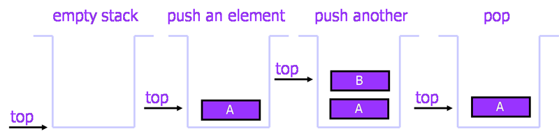
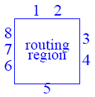
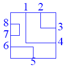

Lab 7:
Stack and Its Applications
Review Topics
- Stacks
- Implementation of Stacks
Review
Stack
Stack is a last-in-first-out (LIFO) abstract data
type and data structure. There are two primary operations: Push and Pop.
Push: Add an element to the top of the stack.
Pop: Remove the element at the top
of the stack.

Implementation
of Stacks
We
can implement stacks using two methods:
- Arrays
The size of stack is given initially - static. - Linked lists
The size of stack is not fixed and never become full - dynamic.
The following is an implementation of
stack using array:
class Stack {public:Stack(int size = 10) // constructor
{maxTop = size - 1; // max stack size = size - 1
values = new double [size];
top = -1;
}~Stack() { delete [] values; } // destructor
bool IsEmpty() // return true if stack is empty, return false otherwise
{ return top == -1; }
bool IsFull() // return true if stack is full, return false otherwise
{ return top == maxTop; }
double Top(); // examine, without popping
void Push(const double x) // add an element to the top of stack
{ if(!IsFull()) values[++top] = x; }
double Pop() // delete the element at the top of stack
{ if(!IsEmpty()) return values[top--]; }
void DisplayStack(); // print all the data in the stack
private:int maxTop; // the max size of stack
int top; // the index of the current top element of stack
double* values; // point to an array which stores elements of stack
};
Lab
Task
Stack application: Switch box routing
There
is a rectangular routing region in the form of a grid with pins at the
periphery. Pairs of pins are to be connected together by laying a metal path
between two pins. A pair of pins that is to be connected is called a net.

For
a switch box, it is permissible to have route segments that are not parallel to
the axes as well as segments that are not straight lines. A valid swith-box route is the one where wire intersection is
forbidden.
For
example, the switch box below is a routable switch because the four nets can be
routed without intersections:

Input
a switch box routing instance and determine whether it is routable. Use
the skeleton (SwitchBox.zip)
provided for you for the lab. Inside the skeleton, there are 3 files, Stack.h, Stack.cpp and switchbox.cpp
Stack.h / Stack.cpp: The implementation of Stack.
You
are not required to modify these two files. The Basic operations supported:
constructor: Constructs an empty stack
empty: Checks if a stack is empty
push: Modifies a stack by adding a value at
the top
top: Retrieves the top stack value; leaves
stack unchanged
pop: Modifies stack by removing the value
at the top
display: Displays all the stack elements. Useful for debugging purpose.
switchbox.cpp: It
is the only file you need to modify. Inside the switchbox.cpp, there is a CheckBox(int [], int)
function. You need to complete the function to check whether a box is routable
or not. You should use a Stack class provided above to complete this function.
Demo
to the TA
|
Routable
example: (the above example)
|
Not
routable example:
|
||||||||||||||||||||
|
Type
number of pins in switch box: 8 Type
numbers for pins 1 through 8: 1 2 2 1 3 3 4 4 The
switch box is routable |
Type
number of pins in switch box: 8 Type
numbers for pins 1 through 8: 1 2 1 2
3 3 4 4 The
switch box is NOT routable |
Hints
- A sequence of abba is routable, while abab
is not.
- Whether a sequence is routable
or not can be decided by one scan of the sequence from left to right.
- Use the LIFO property of stack.